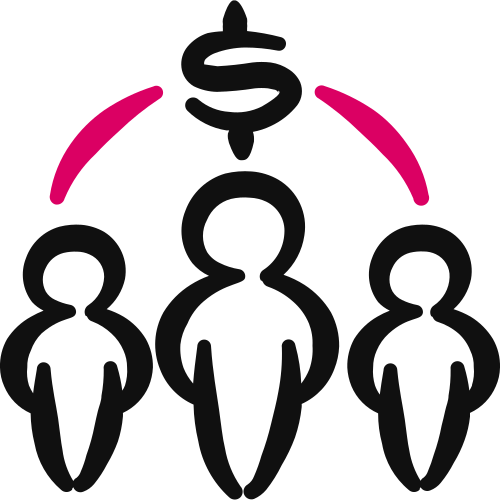

Money Magnet™ · Step 5 · Cash Flow Engine™
Cash Flow Engine™
The event funnel that turns registrations into cash before anyone shows up. You pick your phase, and the Funnel Builder builds every page for you, in your Brand Kit, filled from your own assets.

You'll leave with every page of your phase's funnel as a finished HTML file, in funnel order, in your Brand Kit and filled from your own assets, plus a Design board of every page to review and edit before anything goes to HighLevel.
- Your event becomes a funnel that pays. Registrations turn into cash that covers your ad spend. 01
- Four funnels, one per phase, each ending on its close. Launch ends on The ASK™ Close, Execute on The JOIN™ Close, Growth on The PASS™ Close and Mastery on The SEAL™ Close. 04
- The Builder builds the pages. Each page is one finished HTML file: the template's structure, your words, your Brand Kit. 03
- One page at a time, each one approved. Then every page lands on a Design board for you to review and edit before HighLevel. 05
- No score, just a check. Every page passes the pre-show check before you see it. 08
01
Profit Before Anyone Shows Up
Your Cash Flow Engine™ is the funnel wrapped around your event.
It's the pages a person moves through: register, upgrade, confirm, get in the room, watch the replay, take the next step.
Its job is to turn registrations into cash, early.
When the funnel is wired right, the money that comes in on the way to the event pays for the ads that brought people there. That's what makes it self-liquidatingThe funnel earns back what you spent on ads to fill it, often before the event even starts..
It's also where your Sniper Presentation™ gets delivered and your offer gets taken.
The pages are the stage. Everything you built in Steps 3 and 4 plays out on them.
What it is not
It's not a page you design from scratch. Each page comes from a tested template, and the Builder keeps its sections and order.
It's not new claims either. Every price, date, name and result comes from assets you've already built and approved, and the words are written in your voice.
And it's not the payment system. Your order forms and one-click upsells live in HighLevel, where you connect them yourself.
A great event with no funnel is a nice hour that goes nowhere. The funnel is what turns "that was helpful" into a sale.
02
Where It Fits
The Cash Flow Engine™ is Step 5 of The $100K Day Engine™. It's the second step of the Money Magnet™, the pillar that turns attention into cash.
Figure 02 · The $100K Day Engine™. Three pillars, nine steps. Your funnel is built in Step 5.
What feeds in
The funnel doesn't make anything up. It carries what you already built onto the page.
| Asset | What the funnel takes from it |
|---|---|
| Event Magnet™ | The event's name and promise, the hero headline (your tool's result), the problems and deliverables, and the finished tool image that sits in the hero. |
| Magic Formula™ | Your system's name and parts, and the words for the three animated panels. |
| $Million Promise™ · Golden Avatar™ · SCORE™ Card | The big promise, who the event is for, the before and after, and the objections. |
| Money Model (+ Cash Flow Max™ · Enrollment Doc) | Every price and value on every page. One ticket price. |
| PASS™ Instrument | The PASS™ pages, if your funnel has them. |
| Business Brand Profile | The host: name, bio, company and credentials, and a co-host if you have one. |
| Visual Style Guide | The BRAND KIT: block. The look of every page. |
| Your photos | Your hero photo, headshot, logo, and a photo of both hosts if you run it together. |
Your Cash Flow Max™ and the rest of Step 3 should be done first, along with Step 4. The funnel inherits the strength of the assets behind it.
Before it builds, the Builder reads back what it found and gives you one list of everything that's missing. It won't guess a price, a date or a result.
Anything you can't supply yet is marked [CLIENT TO SUPPLY: …] on the page. That's on purpose. These are real pages that real buyers will see, and an invented price is a trust problem you can't take back.
03
How You'll Build It
You don't hand-code these pages, and you don't write prompts for another tool. The Funnel Builder builds each page itself.
Every page comes out as one standalone HTML fileOne file that holds the whole page: your words, your photos, your Brand Kit and the page's scripts. Open it in any browser and it works., ready for HighLevel AI Studio to rebuild once you've approved it.
Every page brings together three layers, and each one has only one source.
The page's sections, their order and its fixed copy. The Builder keeps them and never redesigns the page.
Every slotA gap in the template for one fact, like the event name or the ticket price. Each one is filled from a named asset. is filled from your own files. Names, prices and dates go in exactly as you wrote them.
The colour, fonts and corners your Visual Style Guide chose, built into the page itself. It never asks you for a colour.
Keeping them apart is the whole point. The structure is tested, the words are approved and the look matches your slides, ads and posts.
Before you start, you can get a feel for the pages in the Funnel Templates gallery, with a fictional sample client.
04
The Four Phase Funnels
Each phase of The $100K Day Accelerator™ is a complete funnel. They climb in order, from the simplest free event to the fullest paid one, and each one ends on its own close.
Your Money Model shows which phase you're in. Build the funnel that fits where you are.
| Phase | The event | Entry | It ends on |
|---|---|---|---|
| 1 · Launch | A micro event, often a workshop | Free | The ASK™ Close: the application page |
| 2 · Execute | A single day, often a masterclass | Free, with a VIP upgrade | The JOIN™ Close: the membership page |
| 3 · Growth | A single day, often a paid masterclass | A paid ticket | The PASS™ Close: the PASS™ session page |
| 4 · Mastery | Multi-day, often a challenge | A paid ticket | The SEAL™ Close: the deposit page |
The Builder confirms your phase, free or paid entry, the event, which offers follow registration and your close, one question at a time. Your Money Model usually answers them, so it confirms rather than re-asks. Closes from earlier phases stay available.
Some paid funnels have pages in two lanesAn "a" page for people who bought the VIP and a "b" page for people who didn't. A HighLevel page has only one exit, so each lane gets its own copy of the page., so VIP buyers and everyone else each reach the right confirmation. Free funnels don't need them.
Launch · The Workshop FunnelFree. Fill the room and book calls.
The simplest of the four. Someone registers, shows up, gets value, catches the replay if they missed it, and applies to talk with you.
Why it matters. No paid tickets and no VIP. The whole job is getting people into the room and into a conversation.
The pages, in order
Registration → Ask Campaign (the survey thank-you) → Event Gate → Replay → Application (The ASK™ Close).
The Ask Campaign asks what their biggest question is. That tells you what your audience wants most, and it sharpens your $Million Promise™ for next week.
A replay that ends with "thanks for watching." The late viewers drift away.
The replay's button leads straight to your application page.
The trap: treating the workshop as the finish line. The application call is the point of this whole funnel.
Execute · The Free Masterclass FunnelFree to attend, earning before the pitch.
Still free, so it fills easily. What changes is the VIP upgrade the moment they register, and the offer you make from the room.
Why it matters. The VIP is your first money in, and the funnel starts finding buyers before you ever make the core pitch.
The pages, in order
Registration → VIP Upsell → VIP Confirmation or Seat Confirmed → Event Gate → Replay → Membership (The JOIN™ Close).
Anyone who says no thanks to the VIP goes straight to Seat Confirmed, which gives them one more chance at it.
Moving to Execute while your free workshop still isn't filling.
Step up once the free event fills and you're ready to add the VIP.
The trap: leaving the order form off the VIP page. A paid step with no way to pay is a dead end.
Growth · The Paid Masterclass FunnelThey pay for the seat, so they show up ready.
The attendee buys a ticket to be there. On top of the ticket sit a VIP upgrade and a PASS™ session upsell, and the funnel ends on The PASS™ Close.
Why it matters. Charging for the seat filters for buyers and pays for your traffic. The registration page leads with a video, and every offer after the ticket is one click.
The pages, in order
Paid Registration → VIP Upsell → PASS™ Upsell (two lanes) → VIP Confirmation or Seat Confirmed → Event Gate → Replay → PASS™ session page (The PASS™ Close).
A "price goes up Friday" line on the registration page.
One ticket price, straight from your Money Model.
The trap: jumping to a paid seat before your free events convert reliably.
Mastery · The Paid Challenge FunnelThe fullest stack, built to land the biggest sale.
A paid challenge that runs over several days. People commit, do the work and see a result before you ever pitch.
Why it matters. By the time the close arrives, the room has already decided. That's why it carries the fullest stack of the four.
The pages, in order
Paid Registration → VIP Upsell → VIP Downsell → PASS™ Upsell (two lanes) → Upsell 2 (two lanes) → VIP Confirmation or Seat Confirmed → Event Gate → Replay → Deposit page (The SEAL™ Close).
The downsell catches anyone who passed on the VIP. If your VIP is $100 or more, it's the same offer as a payment plan. Under $100, it's a lower price with items removed.
Running the challenge funnel with no high-ticket offer ready to sell.
Run Mastery once your paid events convert and your top offer is built.
The trap: a missing upsell block on one page. Every paid page needs its order form or one-click block connected in HighLevel, or the stack breaks.
05
One Page at a Time
The Builder never dumps the whole funnel at once. It works in five moves.
- Read back and list what's missing. It reads your files, tells you what it's building from (phase, pages in order, entry, event, close, Brand Kit, the hero promise, the photos it found) and gives you one list of what's missing. You answer, or say "build with gaps."
- The three panels first. Before any page, it shows the three animated panels for "the problems we solve," one per part of your system. You keep, reword or kill each one.
- Build one page, then wait. Each page arrives with a one-line-per-section summary and anything still to supply. You approve it before the next page starts.
- Save and report. Every page, a page map, a record of every value it filled and a build report of what's still to supply, saved in your AI Workspace.
- The Design board. Every page lands on one board, full height, for you to view and edit by hand. Your edits are carried back into the files before anything goes to HighLevel.
What's on the pages
| Piece | What it does |
|---|---|
| The hero | Your photo, your name and company, your tool's result as the headline, and your real Event Magnet™ tool image. A paid event leads with a video; a free registration page has no video at all. |
| The three panels | Short animations that show the problems your system solves, in your words. |
| The product shot | Laptop, tablet and phone showing everything the event gives them, above the price box. |
| Icons | A matching icon on every value-stack row and every deliverable. |
| The hosts | One section, always. With a co-host, it becomes one "Meet your hosts" section with a photo of you both. |
| Upsell pages | A simple header, one headline and your video. No countdowns. On a paid event every offer after the ticket is one click; on a free event the VIP keeps its cart. |
| Video spots | Each shows a branded thumbnail until your recorded video goes in. |
Nothing reaches HighLevel until you've seen it. You approve each page as it's built, then review the whole funnel on the Design board.
06
Before and After
Here's what happens to one registration page on its way to your Design board.
- Slots for the event name, date, time and ticket price
- A hero spot waiting for a host photo and a tool image
- Three empty panel spots and an empty product shot
- The template's own sections, buttons and fixed copy
- Hero: [your photo] beside [your tool's result], with [your Event Magnet™ tool image]
- Panels: three animations in [your Magic Formula™'s words]
- Price: [your one ticket price], from your Money Model
- Look: your Brand Kit, built into the file
Anything your assets don't hold is marked [CLIENT TO SUPPLY: …], never guessed.
Figure 06 · One page, filled. An illustrative example: the brackets show the shape, not a real event.
Notice what stays the same: the sections, their order and the buttons. Only the slots and the pieces made for you change, and every one traces back to an asset you approved.
07
The Hard Rules
These keep your funnel honest and on-brand. The Builder holds to every one.
- It builds the page. Each page is one finished HTML file, not a prompt for another tool.
- The template is the structure. No sections redesigned or reordered.
- Every slot comes from your own files. Missing value? It asks, or marks it [CLIENT TO SUPPLY].
- Your words stay your words. Prices, dates, names and your coined names go in exactly as your assets have them.
- Every promise is a result. Headlines state what they get, never the pain.
- No invented proof. No made-up testimonials, results, credentials, guarantees or scarcity.
- One ticket price. A paid ticket carries one price. No early-bird or price-rise tiers, and no countdowns on upsell pages.
- Your Brand Kit is the only look. One theme across the whole funnel, the same one your deck and posts use.
- No payment built into the page. A free page collects the form only. Payment lives in HighLevel's order forms and one-click upsell blocks.
- Your photos, never an example's. No stock or sample photo in your slots, and no face is ever invented for the host.
- The Design board comes first. Nothing goes to HighLevel until you've reviewed every page there.
08
The Pre-Show Check
There's no score out of 25 here. Every page passes the pre-show check before you see it. Anything your files can settle gets fixed; anything else comes to you as a question.
| Check | Passes when |
|---|---|
| The facts agree | The length, event type, date and time match everywhere. The stack adds up. One ticket price. No upsell countdowns. Every promise is a result. |
| Nothing invented | No price, number, testimonial, result, credential, guarantee or scarcity that isn't in your files. Gaps are marked, not filled. |
| Nothing left from an example | No sample name, photo or leftover marker anywhere on the page, in its text or behind it. |
| It looks right | Checked at desktop and phone width: the hero reads at a glance, your face is in frame, the tool is your real image and nothing is broken. |
The funnel itself is live when it flows: every page built, connected in order, and no dead ends.
09
Build Your Funnel
Now you build it. Have your assets and photos in your AI Workspace and work through the pages in order.
The Cash Flow Engine™ Funnel Builder (V3)
It reads your phase's templates and your assets, then builds every page of your funnel as a finished HTML file in your Brand Kit, one page at a time with your approval, and finishes on a Design board of every page. It asks one question at a time and waits for your answer.
Install the whole .zip as it is. It carries the templates, your Brand Kit files and the build rules the skill needs.
- Download the skill. Use the button above to save the .zip.
- Install it as a skill in Claude. Upload the .zip to your skill library in Claude. If you run your workspace in Claude Code, put the unzipped folder in your workspace's
skills/folder instead. - Open a chat in your $100K Day AI Workspace project. That's where your assets and photos live, so the Builder can read them.
- Ask it to build your funnel. For example: "Build my Phase 2 funnel." Check: it reads your CONTEXT.md and Brand Kit, then asks one question and waits.
- Answer the setup questions one at a time. Entry, event, offers and close, then its one list of what's missing. Answer it, or say "build with gaps."
- Approve each page. Keep, reword or kill the three panels, then approve each page before the next one starts.
- Review on the Design board. Every page is there, full height. Make your edits by hand; the Builder carries them back into the files. Check: nothing goes to HighLevel AI Studio until you're happy with the board.
- Save it. In your AI Workspace, every page goes in Client Engine › Money Magnet › cash-flow-engine, in the folder for its phase:
phase-1-launch/,phase-2-execute/,phase-3-growth/orphase-4-mastery/.
10
Check Your Work
Most funnels that don't earn fail in one of these five ways. Check yours against each one.
No Event Magnet™ or Money Model yet, so the pages have nothing true to say.
Finish Step 3, then build. The funnel reads from it.
Adding a section, dropping one or shuffling the order.
Keep the tested structure. Change only what's yours.
It looks finished, but it's a false claim with your name on it.
[CLIENT TO SUPPLY: …] until you add the real thing.
Pages go to HighLevel before you've seen them all together, and the mistakes go live.
Review and edit every page on the board, then build in HighLevel.
The buyer clicks and nothing happens.
The ticket, the VIP and every upsell have their HighLevel order form or one-click block connected.
Is it ready?
- Your Event Magnet™, Magic Formula™ and Money Model are built, and the funnel reads from them.
- You built the funnel for your phase, and it ends on that phase's close.
- Every page was approved, and you've reviewed the whole funnel on the Design board.
- Every page looks like your Brand Kit, with one theme throughout.
- Your own photo and your real Event Magnet™ tool image are in the hero.
- Every [CLIENT TO SUPPLY] mark has been filled or is on your list.
- A paid ticket carries one price, with no early-bird tier and no countdown on any upsell.
- Every paid page has its order form or one-click block connected in HighLevel, and the replay points to your close.
11
Your Action Items
Tick these off as you go. Your ticks stay in this browser, and when they're all done the contents marks this chapter complete.
Resources for this chapter
Next, in The Goliath Content™ Map, you plan the content that fills the room your funnel is built for.
The template is the structure, your assets are the words and your Brand Kit is the look. Build one page at a time, review it all on the Design board, and let the funnel pay for itself.
Coach Launch
Apply For Partnership Opportunity
Last updated 2026-11-12